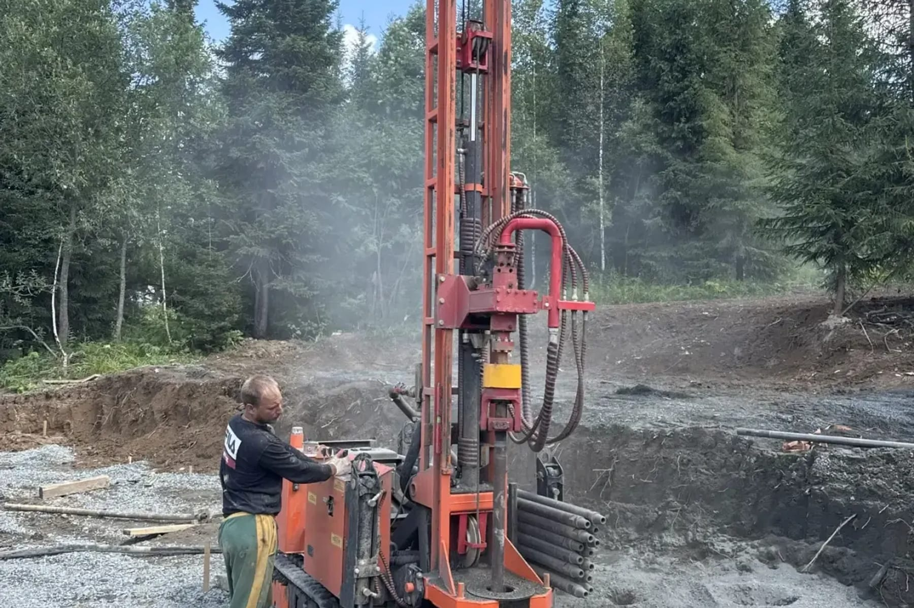

Скважина в Междуреченске: рельеф решает больше геологии
Город зажат между горами, и это отражается на всём: заезде техники, выборе площадки и отводе воды. Разбираем ограничения по логистике — именно они определяют технологию, сроки и смету.
Междуреченск стоит в узкой межгорной долине, там, где сливаются Уса и Томь, зажатый между отрогами Кузнецкого Алатау и Абаканского хребта. Для скважины это значит, что первый вопрос, который стоит задать до разговора о глубине и породе, — не «что там под землёй», а «доедет ли вообще техника и где ей встать». В долине этот вопрос решает смету и сроки не меньше, а иногда и больше, чем сама геология.
Подъезд и сезонная доступность участков
Застройка в горной долине редко бывает просторной: улицы уже, дворы теснее, а часть участков стоит на склоне или у его подножия, где привычный равнинный «заезд с любой стороны» превращается в один-единственный возможный маршрут. Прежде чем говорить о технике, инженеру приходится оценить сам путь до участка: ширину проезда, уклон подъездной дороги, наличие разворотных площадок для тяжёлой машины на базе КАМАЗ.
Сезонность усиливает этот же фактор. Грунтовые подъезды и внутренние проезды частного сектора в горной местности сильнее равнинных зависят от погоды: раскисшая после дождя или во время весенней распутицы дорога на уклоне создаёт для тяжёлой техники риски, которых на ровном участке просто не возникает, — не только застревание, но и потеря управляемости на склоне. Общие сезонные ограничения по заезду техники, актуальные для любого участка независимо от рельефа, разобраны в статье в какой сезон бурить скважину; в Междуреченске к ним добавляется рельеф, и добавляется не как второстепенный фактор, а как определяющий саму возможность проезда.
Похожая логистическая задача решается и в другом горном районе региона — Таштаголе, — но там к ней добавляется ещё и непредсказуемая геология трещиноватых скальных пород, из-за которой даже точная глубина скважины становится ясна только по ходу проходки: бурение в горной местности Таштагола.
Выбор и подготовка площадки в долине
Даже когда техника до участка доехала, встаёт вторая задача — найти и подготовить ровную площадку под установку. Буровой машине нужна устойчивая, по возможности горизонтальная опора: на уклоне риск смещения и потери устойчивости во время работы растёт, а сама точка бурения должна быть доступна для обслуживания на протяжении всего цикла работ. На стеснённом или наклонном участке эта задача решается не всегда очевидно: иногда приходится выбирать не идеальную с точки зрения гидрогеологии точку, а компромиссную — там, где физически можно встать и удержать машину ровно.
Здесь же обычно возникает вопрос подсыпки или временного выравнивания площадки — в тех случаях, когда естественного ровного пятна на участке просто нет. Это дополнительный подготовительный этап, которого не требует ровный равнинный двор, и его стоит закладывать в план работ заранее, а не обнаруживать по факту выезда бригады.
Когда нужна малогабаритная установка
Не каждый участок в долине рассчитан на заезд полноразмерной установки на шасси КАМАЗ. Для стеснённых дворов, узких ворот и построек, стоящих близко друг к другу, — ситуация, характерная для плотной застройки горного города куда чаще, чем для равнинных посёлков, — используется малогабаритная техника. Она заходит там, где тяжёлая машина не пройдёт: рабочая ширина проезда для такой установки — от полутора метров, она может работать внутри уже сложившейся застройки и не оставляет на участке серьёзных следов работы, характерных для полноразмерной техники.
Плата за эту проходимость — не сама возможность бурения, а ограничение по глубине: малогабаритная установка рассчитана на бытовые горизонты и не заменяет полноразмерную машину там, где нужна большая глубина или сложная порода. Прежде чем выбирать между двумя вариантами техники, стоит понять, какая глубина вообще нужна на конкретном участке, — эта задача не завязана на рельеф напрямую и разобрана отдельно, в статье какая глубина скважины нужна дому. Здесь же ключевой вопрос другой: сможет ли выбранная машина вообще попасть на конкретный участок — и ответ на него в горной долине определяется рельефом раньше, чем гидрогеологией.

Отвод промывочной воды и выработанной породы
При роторном бурении с промывкой на поверхность вместе с водой выходит порода, вынесенная из ствола, — шлам. На просторном равнинном участке для этого обычно достаточно места, чтобы организовать временный отстойник или направить сток в сторону, не создавая неудобств. На стеснённом участке в горной долине, тем более если рядом стоят соседние постройки или участок граничит со склоном, вопрос отвода этой воды и породы требует отдельного внимания уже на этапе подготовки: куда именно пойдёт сток, не окажется ли он на соседнем участке или не размоет ли откос.
Объём и способ временного отвода промывочной воды при бытовом бурении решаются по месту, исходя из конкретной планировки участка, и обсуждаются с заказчиком на этапе подготовки, а не по общему шаблону.
Зона влияния Распадского разреза
Отдельный вопрос для части территории Междуреченского района — соседство с угледобычей. Распадский угольный разрез — один из крупных объектов округа, и он входит в число разрезов, по которым в регионе ведётся государственный мониторинг состояния подземных вод: отчёты о наблюдениях по его территории предоставляются наряду с отчётами по другим разрезам региона. Это не означает автоматически, что вода на конкретном участке в зоне его влияния загрязнена, — в открытых источниках нет данных, которые привязывали бы конкретные показатели именно к Распадскому разрезу отдельно от общей сводки по региону. Это означает другое: если участок расположен рядом с зоной ведения горных работ, разумно не гадать, а запросить у подрядчика включение в план работ дополнительной проверки при вскрытии горизонта и заложить в план анализа воды после бурения более широкий набор показателей, а не только стандартный. Как устроен такой анализ и что именно в нём стоит заказывать, разобрано в статье анализ воды из скважины. Похожий по логике, но более подробный чек-лист проверок для участка рядом с действующим разрезом — уже разобран для другого города региона, где эта тема ключевая: бурение рядом с действующим разрезом; принцип проверки там применим и к Междуреченску, если конкретный участок граничит с горными работами.
Как рельеф в итоге меняет смету
Все перечисленные факторы — подъезд, площадка, выбор техники, отвод воды — это не абстрактные технические детали, а конкретные пункты, которые могут вырасти в смете участка в горной долине по сравнению с равнинным двором: подготовка площадки, возможная необходимость малогабаритной техники, дополнительное время на организацию отвода стока. При этом далеко не каждый участок в Междуреченске сталкивается со всеми этими сложностями сразу — часть дворов города стоит на вполне доступных, разработанных площадках, где рельеф добавляет минимум хлопот. Разница между «доедет полноразмерная машина без проблем» и «нужна малогабаритная установка и подготовка площадки» видна только по факту оценки конкретного адреса — и именно поэтому первый разумный шаг для участка в горной долине — не расчёт по телефону, а выезд инженера на место. Смежная тема — бурение непосредственно на участке с уклоном как инженерная задача самой конструкции скважины, а не логистики подъезда, — разобрана отдельно: бурение на участке с уклоном. Оценить подъезд и особенности конкретного участка в Междуреченске можно при заказе бурения скважины на воду.